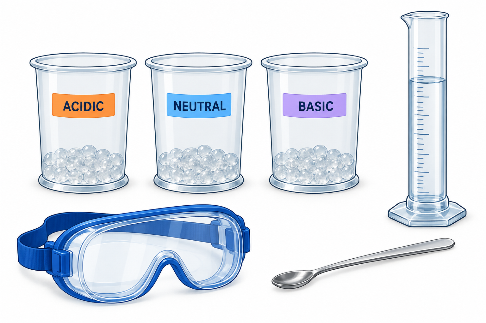

How does a hydrogel change?
Compare vinegar, DI water, and baking-soda solution. Test three conditions in each of three trials—nine fresh gel samples per group.
Get your station ready

Your group needs
- Goggles for everyone, a timer, and a place to record data.
- 3 Petri dishes labeled ACIDIC, NEUTRAL, and BASIC plus 1 separate beaker for mixing BASIC solution.
- A graduated cylinder, 1 spoon per group, pH strips, a marker, and paper towels.
- 9 portions of 0.50 g hydrogel powder and 1 packet of 1.5 g baking soda.
- DI water and the supplied vinegar.
Wear goggles. Keep powder away from your face. Do not taste the materials. Tell your instructor about spills.
A hydrogel is a water-holding polymer network. In this lab, your evidence is how the gel looks and changes—not how much it weighs.
Next: prepare and label →Prepare and label
Make BASIC for all three trials.
- Empty the baking-soda packet into the mixing beaker.
- Measure 150 mL DI water with the graduated cylinder and add it.
- Stir until dissolved. Label this beaker BASIC.
Label the three Petri dishes.
Check each test liquid with a fresh pH strip before adding it to the gel. Follow the strip instructions and record the actual reading. Do not assume a pH from the label.
DI = deionized water. Rinse the shared spoon and measuring cylinder with DI water and drain them before changing liquids or dishes.
Next: make three matching gels →Make three matching gels
Use this recipe in each labeled Petri dish.
- Add one 0.50 g portion of hydrogel powder to each Petri dish. Use pre-portioned powder or the lab balance.
- Measure and add 40 mL DI water to each. Read the bottom of the water curve at eye level.
- Stir gently as each gel forms. Use the same preparation method for all three. Note how the gels look before testing.
Add, stir, then wait
Add the matching liquid to each prepared gel.
Use the group’s one spoon. Before each new dish, wipe any gel clinging to the spoon into the trash, then rinse the spoon with DI water and drain. Rinse and drain the cylinder between different liquids.
After adding the test liquid, stir that sample 10 times. Start its 5-minute wait as soon as its stirring is complete.
Next: score what you see →Score, record, repeat
Use the same scale for every sample. Compare with the gel before the test liquid was added.
- 5Fully solid / no change
- 4Slightly smaller / softened
- 3Partly liquid
- 2Mostly liquid
- 1Fully liquid
Agree on the closest score and write a brief observation. Similar scores are valid results. Do not change a score to match a prediction.
One trial includes all three conditions.
Your results and cleanup
Use page 6 of the printable guide, your assigned worksheet, or copy these tables into your notebook.
| Condition | pH |
|---|---|
| Acidic | |
| Neutral | |
| Basic |
| Condition | Trial 1 | Trial 2 | Trial 3 | Mean | SD* |
|---|---|---|---|---|---|
| Acidic | |||||
| Neutral | |||||
| Basic |
*Optional: standard deviation
Sample standard deviation (SD) describes how spread out your three scores are.
- Subtract the mean from each score.
- Square each difference and add the three squares.
- Divide the sum by 2 (three trials minus one).
- Take the square root.
For scores 2, 3, 4: SD = √[(1 + 0 + 1) ÷ 2] = 1.0.
These are subjective category ratings, not a direct measurement of gel strength. Describe your observations alongside the averages.
What does your evidence show?
- Which condition changed most compared with its starting gel?
- Were the three trials consistent? What could explain differences?
- If the conditions looked similar, what can you honestly conclude?
Vinegar, water, and baking-soda solution differ in composition as well as pH. This comparison alone cannot prove that pH caused every change.
Scan to open the instructions on another phone. No sign-in needed.
About this guide and science references
Procedure quantities come from the supplied Hydrogel Lab QR Student Guide and the tested recipe discussed during lab preparation.
General background: ACS: Exploring pH-sensitive hydrogels; ACS: Salt solutions and polyacrylate swelling. These references explain general behavior; they are not validation of this exact classroom recipe.
Gel disposal: Flinn Scientific: sodium polyacrylate. Scrape and wipe gel into the trash before rinsing equipment.
Station picture: educational illustration, not experimental evidence.